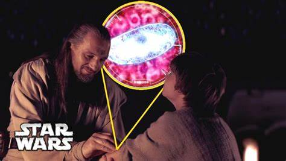

The Mandalorian explained: Does M-count mean midi-chlorians – and what are midi-chlorians? By Molly Edwards 11/20/2020
In The Mandalorian season 2 episode 4, the eponymous gunslinger uncovers something very strange and kind of creepy at an Imperial base on Navarro. Remember that scientist from season 1? Well, he’s back, albeit in hologram form, and he’s talking about something called an “M-count.”
While we already knew the Child, aka Baby Yoda, was a bit of a troublemaker, it now seems he’s causing chaos on a galactic scale. The Empire were conducting those experiments on him last season to harvest his blood, which they’ve been implanting into other beings. Though these experiments haven’t worked so far as the volunteers keep rejecting the blood, it’s likely they will eventually succeed considering the revelations of the sequel trilogy.
“M-count” seemingly refers to the amount of midi-chlorians in Baby Yoda’s blood, but what exactly does that even mean? We’ve got everything you need to know right here.
What are midi-chlorians?
“Life creates it. Makes it grow. Its energy surrounds us, and binds us. Luminous beings are we, not this crude matter. You must feel the Force around you, here, between you, me, the tree, the rock, everywhere,” so says (Adult) Yoda in Star Wars: The Empire Strikes Back. For a while, this was the best explanation as to what exactly the Force is, and how it works. That is, until Star Wars: The Phantom Menace came along and cleared up some questions.
during the events of Episode I, Qui-Gon Jinn and Obi-Wan Kenobi analyse Anakin Skywalker’s blood for midi-chlorians. When they do, they’re surprised to find out how high the count is in the future Jedi/Sith Lord. In fact, it’s even higher than Yoda’s – and while that Jedi Master gives us a mystical, spiritual explanation of the Force, the prequels get into the specifics.
Midi-chlorians, Qui-Gon explains to a young Ani, “are a microscopic lifeform that resides within all living cells.” Midi-chlorians are necessary for life to exist, and they “speak” about the Force’s will to the people they inhabit. To better hear them, the person in question needs a quiet mind (which explains why the Jedi are always meditating). In order to be Force-sensitive, you need a high enough count per cell to detect the energy. Ordinary people, therefore, have a lower number, around 2,500, while the Jedi have more – Anakin has over 20,000.
Essentially, the higher the midi-chlorian count, the more connected to the Force someone is – and so the more powerful they are.

George Lucas' sequel trilogy plans
George Lucas had plans to explore the midi-chlorians a lot further. In fact, his defunct sequel trilogy was going to expand on another, related aspect of Star Wars lore – the Whills.
Lucas’ sequel trilogy would have explored the "microbiotic world,” as previously revealed by the creator of Star Wars. “There’s this world of creatures that operate differently than we do. I call them the Whills. And the Whills are the ones who actually control the universe. They feed off the Force.”
These creatures are immortal, and they’re masters of the Force. “Back in the day, I used to say ultimately what this means is we were just cars, vehicles for the Whills to travel around,” Lucas continued. “We’re vessels for them. And the conduit is the midi-chlorians. The midi-chlorians are the ones that communicate with the Whills. The Whills, in a general sense, they are the Force.”
While these beings might sound weird, they’re actually pretty entrenched in the galaxy far, far away, existing in some of Lucas’ early drafts of Star Wars: A New Hope.
How does this relate to Baby Yoda?
The Imperials are after the Child’s blood, which has a high midi-chlorian count. Why exactly they need that blood remains currently unknown, though it’s likely to create a new Sith master to lead the remnants of the Empire – and we know Supreme Leader Snoke, a being synthesised by the Sith Eternal and the Emperor, will one day lead the First Order.
Baby Yoda must have a lot of midi-chlorians to be of this much interest to the sinister Moff Gideon. In fact, the Imperial scientist even says he doesn’t think they’ll find anyone else with more in their blood. We’ve already seen that Baby Yoda can do extraordinary things when the mood takes him, including Force healing – and choking – as well as lifting that Mudhorn (and stealing some macaroons), so it makes sense that his M-count would be very high.
Worryingly, the scientist explains that he was only able to take a little bit of Baby Yoda’s blood because of how small the creature is – any more would have killed him. Considering IG-11 was under the impression the Child was to be brought in dead in Chapter 1, mark us down as very concerned for the little green being’s safety this season – especially if Gideon decides they need all of Baby Yoda’s blood for more experiments.
Here’s hoping Mando finally makes it to Ahsoka Tano next episode, because it seems he’s going to need all the help he can get to fend off a Darksaber-wielding Gideon and what’s left of the Empire’s might. Check out our The Mandalorian season 2 release schedule to make sure you don’t miss the action in Chapter 13.
You May also Like
 Epic Games have released a new Fortnite update.. By Yousef Saifi |
 Destiny 2 Beyond Light review in progress..By Austin Wood |
 Best Xbox Series X games.. By Vic Hood, Adam Vjestica, Stephen Lambrechts |